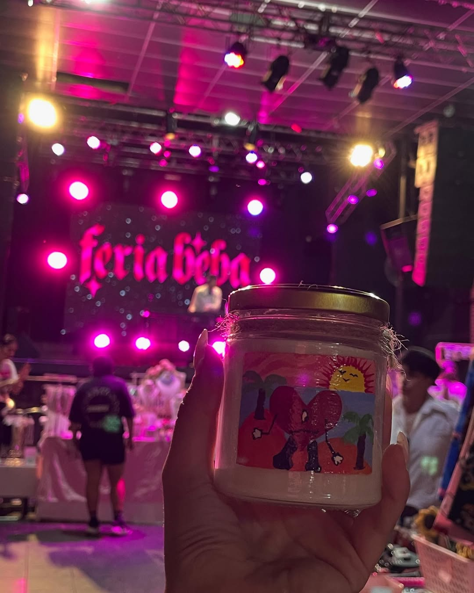

Sobre Nosotros
Hola, soy Sofi. Estudio Psicología y las velas son mi cable a tierra. Me copa buscar armonía: aromas que acompañen, colores tranqui y diseños a mano alzada para que cada velita sea única. Laburo en tandas chiquitas, con materiales elegidos y un proceso 100% artesanal. La idea es simple: que cuando la prendas, tu espacio quede más calmo, con buena onda y esa belleza cotidiana que suma. Si tenés una idea —un aroma, una paleta, una frase— la hacemos. Todo sale del taller con dedicación y mucho amor.
Como comenzó
Arrancó como hobby. Entre la facu y la vida, necesitaba un rato para crear, bajar un cambio y vibrar mejor en casa. Primero hice velitas para mí, después para mi gente, y de a poco se armó el emprendimiento. Quise mantener el espíritu del inicio: producir con tiempos conscientes, probar mezclas nuevas y escuchar a quienes confían en mis velitas. Cada diseño nace de una historia o un estado de ánimo, por eso no hay dos iguales. Hoy sigo aprendiendo y creciendo a fuego lento, con las mismas ganas del primer día. Luz, aroma y buena onda en cada velita.